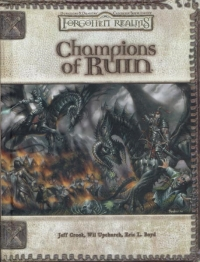

“Champions of Ruin” on the
Shelf of Many Books

Champions of Ruin
D&D 3.5
(3e)
Year
: 2005 (May)
Champions of Ruin
on Amazon
Champions of Ruin
on TSR Info
Known monsters from the book:
Bazim-Gorag
Dendar the Night Serpent
Eltab
Ithyak-Ortheel
Kezef the Chaos Hound
Living Zombie
Malikizid